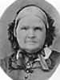
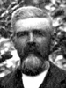
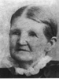
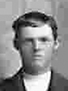
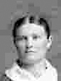
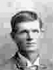
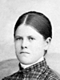

The Family of John William and Caroline Geneva Jenkins Dutson
Home
Histories
Charts
Photos
Maps
Restricted
News
Info
Contact
| <--(return)-- |    | John Dutson and Ann Green  |
----> |  | John William Dutson and Caroline Geneva Jenkins He also married Elizabeth Jane Cowley and Frances Nixon and Ann Palmer. |
|  | George Lyman Dutson 1 Jul. 1859 - 14 Nov. 1908 Married Martha Rose Anne Lovell 15 June 1882 The 1st child of John William and Caroline Geneva Jenkins Dutson |
|
Joseph Willard Dutson 9 Jan 1862 - 30 Sep 1887 The 2nd child of John William and Caroline Geneva Jenkins Dutson |
|
Elizabeth Eleanor Dutson 27 Oct. 1864 - 17 Apr. 1945 Married John Herman Lundahl 30 Dec. 1884 The 3rd child of John William and Caroline Geneva Jenkins Dutson |
|
Christopher Columbus Dutson 19 Feb. 1867 - 31 Aug. 1947 Married Selma Talbot 12 Nov 1890 The 4th child of John William and Caroline Geneva Jenkins Dutson |
|  | James Nathaniel Dutson 9 May 1869 -14 Jan. 1947 Married Susannah Lovell 2 Nov. 1892 The 5th child of John William and Caroline Geneva Jenkins Dutson |
| * | Son Dutson - 6th child, Stillborn 11 Aug. 1871 |
|
Samuel Clearmont Dutson 21 May 1873 - 12 Mar 1973 Married Maria Daisy Knight 16 Sep. 1896 The 7th child of John William and Caroline Geneva Jenkins Dutson |
|
Sarah Ann Dutson 12 Apr. 1876 - 19 Apr. 1963 The 8th child of John William and Caroline Geneva Jenkins Dutson |